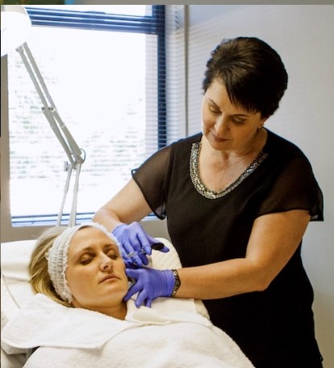

Dr. van Dyk — Integrated Health Practitioner in Centurion
Compassionate, evidence-based care at Health Synchrony, Irene Security Estate, Centurion.
Qualifications & Training
MBChB
University of Pretoria
Advanced Diploma in Aesthetics
Post-graduate specialist training
Meet Dr. van Dyk

A Personal Introduction from Dr. van Dyk
Dr. van Dyk would like to introduce herself personally and share her approach to integrated health care. A short video introduction will be available here soon. In the meantime, please feel free to contact us with any questions.
Important Notice
The doctor will never ask for payment before a consultation